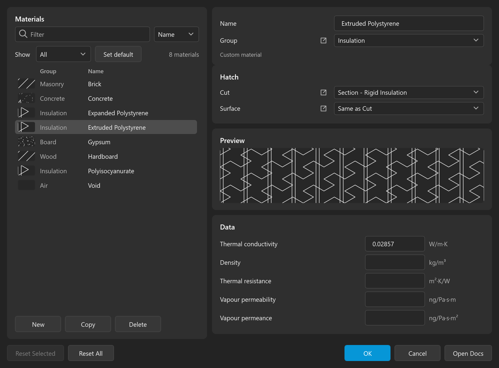

Materials
| Function Syntax | DYL-MATERIALS + 3 commands for the material of the objects – see Material Of The Objects |
| Requires | AutoCAD 2025 or later for Windows |
| Licence | GNU General Public License v3 |
Program Description
Say what your objects are made of: brick, concrete, insulation. A material gives its hatch, in section and in elevation, and its data for the thermal resistance of your assemblies.

How To Use
- Type Dyl-Materials, or click Materials in the ribbon.
- Pick a material, or click New or Copy; give it a name and a group.
- Pick its Cut hatch, and its Surface hatch when it looks different in elevation.
- Type the data you know; leave the others empty. Click OK.
The Window
- The list – filter, sort, or show one group. Select several to change them together.
- Cut, Surface – its hatch presets; the square button beside each one edits it.
- Preview – its hatch as it plots.
- Data – below.
Material Of The Objects
What Quick Draw and Quick Shape draw knows its material, and follows a material you change. Assign Material gives one to the rest:
- MTASSIGN – gives a material to hatches and outlines.
- MTMATCH – copies it from one object to others.
- MTSHOW – says what objects are made of.
Data
Shown in the units of the drawing, metric or imperial. Empty when not known: DynALisp never makes one up.
| Value | Metric | Imperial |
|---|---|---|
| Thermal conductivity | W/m·K | Btu·in/h·ft²·°F |
| Density | kg/m³ | lb/ft³ |
| Thermal resistance (an air space, a membrane) | m²·K/W (RSI) | h·ft²·°F/Btu (R) |
| Vapour permeability | ng/Pa·s·m | perm·in |
| Vapour permeance (a membrane, a coating) | ng/Pa·s·m² | perm |
Default Materials
DynALisp comes with over a hundred materials. Their values are generic and safe, from the National Building Code of Canada and the Novoclimat tables of Quebec: a product sheet can give a better one, to type in.
Materials Of An Older Version
Materials from DynALisp 1.1 or older are updated by themselves and draw as before (see Hatch Presets).
Command Names And Aliases
The short names are aliases of the command: change them in Dyl-Suite. The rows marked ↳ are its variants, run by their short name.
| Command | Aliases | Name |
|---|---|---|
| Dyl-Materials | – | Materials |
| ↳ Pst-MaterialAssign | MTASSIGN | Material Assign |
| ↳ Pst-MaterialMatch | MTMATCH | Material Match |
| ↳ Pst-MaterialShow | MTSHOW | Material Show |